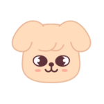

ISEE ESSENTIAL · 1-1 TO 2-5 · FORM A
100 Word Test

A hundred words, one small step at a time. My snack break is already planned.
Your study buddy, Puppy M
Independent mastery retest. Close word cards and notes. Choose one meaning for each word. Leave an item blank if unsure. Mark any item completed with help.
You may pause between the four parts without reviewing words. In this browser, answers last only until the page is reloaded.
Answers and explanations stay hidden until you finish.
Your study buddy, Puppy M